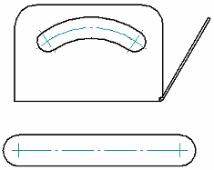
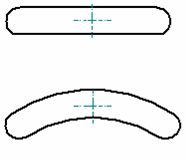
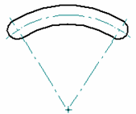

Automatic Centerlines command
Automatic Centerlines command
Automatically retrieves all centerlines and center marks for model geometry and features in an associative part view of the model. You can filter the elements on which to place them by type and size.
-
You can retrieve all centerlines, center marks, or both.
-
You can remove all centerlines, center marks, or both.
-
You can use options on the Automatic Centerlines command bar to apply projection lines, and to connect center marks that lie on the same X or Y axis.
-
You can specify the eligible-geometry parameters for creating the annotations using the Center Line and Center Mark Options dialog box, which you can open from the command bar. You can use this dialog box to specify centerline and center mark options for part views that show slot features.
|
Slot centerline and mark options |
Example |
|
Centerlines=On End point center marks=On |
 |
|
Strike point center marks=On |
 |
|
 |
This command is not available for draft quality views. For more information, see Draft quality and high quality views.
How do I
Automatically create centerlines and center marks in a drawing viewAutomatically remove centerlines and center marks from a drawing view
Place a center mark
Place a centerline midway between two lines
Place a centerline on a slot
Place a center axis on a cylinder or hole feature
Example: Dimension a curved slot
Place a bolt hole circle
Learn more
Centerlines, center marks, and bolt hole circlesLook up more details
Automatic Centerlines command barCenterline and Center Mark Options dialog box
Center Mark command
Center Mark command bar
Centerline command
Centerline command bar
Center Line and Center Mark Properties dialog box
Bolt Hole Circle command
Bolt Hole Circle command bar
Bolt Hole Circle Properties dialog box